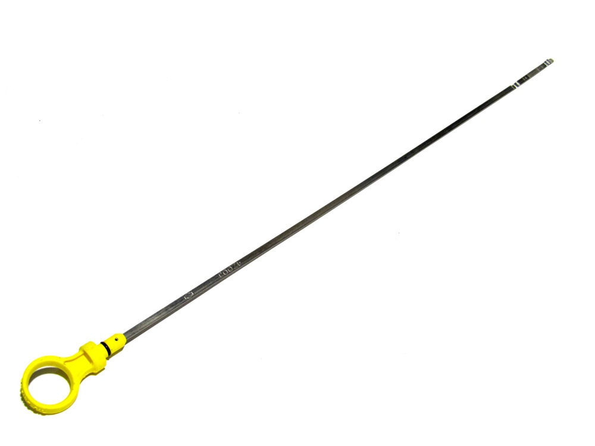
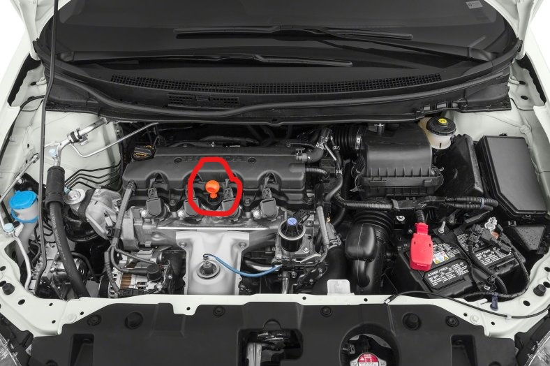
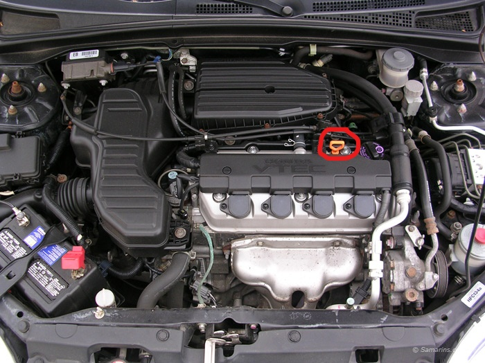
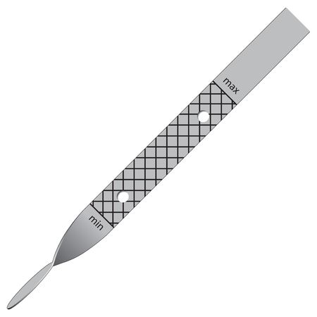

There's two ways to change your oil: the Quick Cheat and the Full-Scale Comprehensive
Exam.
The quick cheat will take you maybe 5 minutes but is as it says: a quick fix.
The comprehensive exam will take you closer to 1-2 hours depending on your car, but
is necessary at least once a year to keep your car from breaking from oil clogs.
Before we get into how to change your oil, let's talk about why you have to. Fresh motor
oil, when you put it into the car, should be a golden color and have a pretty smooth flow.
As it circulates through the engine of the car, it picks up dust and dirt, turning it black.
Since you don't want these contaminants getting into the engine, you need the change the oil
out from time to time. Another reason to change your oil is because it quite literally burns away.
The temperatures in the engine (where it operates) are incredibly high, and while oil can handle
most temperatures, it also has a limit. So as time goes on, the oil burns away, leaving less and less
oil to circulate the engine, which can cause problems including the engine seizing and mechanisms
refusing to operate.
But how am I supposed to know WHEN to change my oil??
That brings us to our first topic: checking your oil level. As a rule, you should usually check
your oil once a month, and depending on the level, you'll know if you need to change your oil or
not. Also, make sure your car is as cold as possible (cold meaning here undriven). To ensure this,
the best time to check your oil is in the morning, before you drive it for the day. If you can't
change it in the morning (earliness, laziness, etc.), if you wait about 1 hour, the oil should
reach about the temperature of an undriven car.
Checking Your Oil
Things to Gather Beforehand
- A paper towel
- Your eyes
- This guide
STEP ONE: Open the Hood
To check your oil, you going to need to open the hood. This step you're going to have to figure out yourself, as each car is different
in terms of how the hood opens, what lever to pull to release it, if it has an extra lock on the
hood, etc. But the very first step is to open your hood.
STEP TWO: Locate the Dipstick
The dipstick is a long strip of metal that is inserted into the oil resevoir, and is used to check the oil level. It usually has an orange
or yellow top, and is about as long as your arm.

A generic dipstick
When you open the hood, the only part of the dipstick that should be showing is the orange/yellow top. It should be located in or
around the engine.


Three positions your dipstick could be in (dipstick circled in red).
STEP THREE: Remove the Dipstick
To remove the dipstick, pull straight up until the full dipstick is removed. To get an accurate reading, we'll remove the dipstick
once, put it back in, then remove it again. In order to gain stability and reduce the random flinging of oil, take the paper towel
and wrap it around the dipstick after it's been pulled up about 3 inches. We're doing this to clean the stick and provide ourselves
stability when removing it. The first time we remove the stick, keep the paper towel on the entire time you remove it, cleaning it from
top to bottom. After you've cleaned the whole stick, put it back in the car, then remove it again. This time, instead of cleaning the whole
stick, stop the paper towel about 3 inches above the bottom.
STEP FOUR: Read the Dipstick
At the bottom of your dipstick, there will be some sort of measurement, either with three levels or two levels.

End of a generic dipstick